Usagette
你的用量限額，就在選單列，上升時有聲音提示。
功能簡介
Usagette 位於 Mac 選單列，顯示你已用掉多少 Claude 用量限額：5 小時工作階段限額、7 天每週限額，以及到每次重置的即時倒數。可依需求開關讀數的各個部分，打開面板查看全貌。
- 從 Claude Code 的狀態列讀取。Usagette 會設定一個小型狀態列腳本，儲存 Claude Code 本來就會回報的數字。你自己的狀態列照常運作。數字會在你使用 Claude Code 時更新；兩次工作階段之間，倒數繼續走動。
- 聲音隨用量升高。選擇提示音從哪裡開始以及相鄰之間的間隔。每一級都更強，共五級，所以不用看也能聽出離限額有多近。到達限額和重置時也有提示音。
- 設定檔。一般（輕柔鐘聲）、基本（macOS 標準聲音）、動漫（閃光和語音台詞，稍微搞笑一點）和自訂（你自己的聲音檔案）。你還可以匯入自己的聲音設定檔。
- 該安靜時就安靜。安靜時段、靜音開關，以及 Mac 鎖定時保持靜默。
- 捷徑和登入時打開，與家族中的其他 App 一樣。
需要 macOS 14 Sonoma 或更新版本以及 Claude Code。即將登陸 Mac App Store。用量限額由 Claude Code 為設有限額的訂閱方案顯示。
免費聲音描述檔
為 Usagette 提供更多聲音，可免費下載。每套都會隨著五個等級逐步升高，並有各自的上限提示音與重置提示音。
- 下載8-Bit Adventure. 金幣與強化道具，接著是錯誤提示音與低血量警報，到上限時是遊戲結束的慘叫，重置時是一段號角。 聲音：Juhani Junkala，公有領域（CC0）。
- 下載Arcade Announcer. 遊戲播報員：起初是平靜的播報，隨著升高是「Hurry up!」與「Look out!」，到上限時是「Game over」。 語音：Kenney，公有領域（CC0）。
- 下載Music Box. 上發條的小曲子，隨著接近上限而變得更慢、更低沉。 原創聲音，專為 Usagette 製作。
- 下載Retro Console. 來自假想 8 位元遊戲機的晶片音樂嗶聲：強化道具、警告警報與遊戲結束旋律。 原創聲音，專為 Usagette 製作。
- 下載Singing Bowls. 起初是一聲輕柔的缽音，隨著升高變得更低、更密集，到上限時是一聲鑼響。 原創聲音，專為 Usagette 製作。
- 下載Sonar Dive. 潛艇聲納：先是零星的探測聲，隨後加快，到上限時是下潛警報，上浮時是氣泡聲。 原創聲音，專為 Usagette 製作。
要加入，請在 Usagette 中開啟「設定 › 聲音描述檔」並選擇「輸入…」，或將下載的檔案拖放到那裡。也可以先解壓縮，再按兩下該描述檔。
一段話說明隱私權
Usagette 沒有網路存取、帳號和追蹤，沒有任何內容會離開你的 Mac。它只讀取其狀態列腳本寫入的一個檔案，位於你允許其使用的 .claude 檔案夾中。完整的隱私權政策更詳細地說明了同樣的內容。
同一開發者的更多 App
小巧的 App，每一款都專心做好一件事。無需帳號，沒有廣告，也沒有一款會追蹤你。
 Statuette在選單列查看 CPU、記憶體、磁碟和網路。Mac
Statuette在選單列查看 CPU、記憶體、磁碟和網路。Mac Tockette從選單列輕輕一拖，計時器就開始了。Mac
Tockette從選單列輕輕一拖，計時器就開始了。Mac Zonette你在意的每個時區，按一下就能看到。MaciPhone 和 iPadAndroid
Zonette你在意的每個時區，按一下就能看到。MaciPhone 和 iPadAndroid Lunette月亮和太陽，一目了然。MaciPhone 和 iPadAndroid
Lunette月亮和太陽，一目了然。MaciPhone 和 iPadAndroid Lunarette四種傳統的農曆。MaciPhone 和 iPadAndroid
Lunarette四種傳統的農曆。MaciPhone 和 iPadAndroid Pausette為眼睛和腰背安排溫和的休息。Mac
Pausette為眼睛和腰背安排溫和的休息。Mac Poisette坐直身子，由你戴著的 AirPods 提醒。MaciPhone 和 iPad
Poisette坐直身子，由你戴著的 AirPods 提醒。MaciPhone 和 iPad Hushette寧靜的環境音，從不循環重複。MaciPhone 和 iPadAndroid
Hushette寧靜的環境音，從不循環重複。MaciPhone 和 iPadAndroid Tapsody打字時發出機械鍵盤的聲音。Mac
Tapsody打字時發出機械鍵盤的聲音。Mac Thrumline你的心率，即時顯示在選單列。Mac
Thrumline你的心率，即時顯示在選單列。Mac Nightjar讓 Mac 保持喚醒。實實在在。Mac
Nightjar讓 Mac 保持喚醒。實實在在。Mac Umbrette調暗一切，只留下你正在工作的視窗。Mac
Umbrette調暗一切，只留下你正在工作的視窗。Mac Prompette就在相機下方的提詞機。MaciPhone 和 iPadAndroid
Prompette就在相機下方的提詞機。MaciPhone 和 iPadAndroid Tallette為你的算帳準備的一卷紙帶。MaciPhone 和 iPadAndroid
Tallette為你的算帳準備的一卷紙帶。MaciPhone 和 iPadAndroid Probette媒體檔案的所有技術細節，用淺白的話說清楚。MaciPhone 和 iPadAndroid
Probette媒體檔案的所有技術細節，用淺白的話說清楚。MaciPhone 和 iPadAndroid Bindette把音訊檔案合成一本像樣的有聲書。MaciPhone 和 iPadAndroid
Bindette把音訊檔案合成一本像樣的有聲書。MaciPhone 和 iPadAndroid Lettrette按寄出時的原樣打開 winmail.dat 和 .msg 檔案。MaciPhone 和 iPad
Lettrette按寄出時的原樣打開 winmail.dat 和 .msg 檔案。MaciPhone 和 iPad Nhanh Tay把四個答案排好順序。要快。MaciPhone 和 iPadAndroid
Nhanh Tay把四個答案排好順序。要快。MaciPhone 和 iPadAndroid Pinette讓便條一直在你眼前。MaciPhone 和 iPadAndroid
Pinette讓便條一直在你眼前。MaciPhone 和 iPadAndroid Squiggo和友善的小夥伴一起畫畫。MaciPhone 和 iPadAndroid
Squiggo和友善的小夥伴一起畫畫。MaciPhone 和 iPadAndroid Foreman給師傅的工作、報價與發票。MaciPhone 和 iPadAndroid
Foreman給師傅的工作、報價與發票。MaciPhone 和 iPadAndroid Tilewake畫面會甦醒的滑塊拼圖。MaciPhone 和 iPadAndroid
Tilewake畫面會甦醒的滑塊拼圖。MaciPhone 和 iPadAndroid Chăm Luyện越南語一年級練習，題目都會朗讀。iPhone 和 iPad
Chăm Luyện越南語一年級練習，題目都會朗讀。iPhone 和 iPad